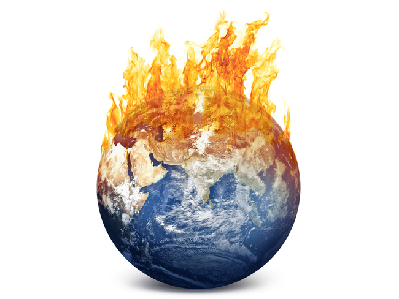

 endangered species, any species that is at risk of extinction because of a sudden rapid decrease in its population or a loss of its critical habitat. Previously, any species of plant or animal that was threatened with extinction could be called an endangered species. The need for separate definitions of “endangered” and “threatened” species resulted in the development of various categorization systems, each containing definitions and criteria by which a species can be classified according to its risk of extinction. As a rule, a range of criteria must be analyzed before a species can be placed in one category or another. Often such categorization systems are linked directly to national legislation, such as the United States Endangered Species Act (ESA) or the Canadian Species at Risk Act (SARA). In addition, regional agreements, such as the European Union’s Habitats Directive (Council Directive 92/43/EEC), and international conservation agreements, such as the Convention on the Conservation of Migratory Species of Wild Animals (CMS) or the Convention on International Trade in Endangered Species of Wild Fauna and Flora (CITES), are connected to species-assessment systems. One of the most-recognized independent international systems of species assessment is the Red List of Threatened Species, created by the International Union for Conservation of Nature (IUCN).
An example of a widely publicized wildlife controversy involves the relatively recent declines in amphibian populations. Known to be important global indicators of environmental health, amphibians have experienced some of the most serious population declines to date of all groups that have been assessed globally through the IUCN Red List process (see below). Amphibians (a group that includes salamanders, frogs, toads, and caecilians [wormlike amphibians]), being particularly sensitive to environmental changes, are severely threatened by habitat destruction, pollution, the spread of a disease called amphibian chytridiomycosis, and climate change. Beyond these notable examples, many of the world’s birds are also at risk. The populations of some bird species (such as some albatrosses, petrels, and penguins) are declining because of longline fishing, whereas those of others (such as certain cranes, rails, parrots, pheasants, and pigeons) have become victims of habitat destruction. On many Pacific islands, the accidental introduction of the brown tree snake (Boiga irregularis) has wreaked havoc on many bird populations. Many fishes and other forms of aquatic and marine life are also threatened. Among them are long-lived species that have life history strategies requiring many years to reach sexual maturity. As a result, they are particularly susceptible to exploitation. The meat and fins of many sharks, rays, chimaeras, and whales fetch high prices in many parts of the world, which has resulted in the unsustainable harvest of several of those species. Moreover, freshwater habitats worldwide are progressively threatened by pollution from industry, agriculture, and human settlements. Additional threats to freshwater ecosystems include introduced invasive species (such as the sea lamprey [Petromyzon marinus] in the Great Lakes), the canalization of rivers (such as in the streams that empty into the Everglades in Florida), and the overharvesting of freshwater species (as in the case of the extinct Yunnan box turtle [Cuora yunnanensis] in China). While an estimated 45,000 described species rely on freshwater habitats, it is important to note that humans are also seriously affected by the degradation of freshwater species and ecosystems. Against this backdrop of threats related to urban expansion and food production, the unsustainable harvest of animal and plant products for traditional medicine and the pet trade is a growing concern in many parts of the world. These activities have implications for local ecosystems and habitats by exacerbating population declines through overharvesting. In addition, they have cross-border repercussions in terms of trade and illegal trafficking. To prevent the overexploitation of species as they are traded across national boundaries, the Convention on International Trade in Endangered Species of Wild Flora and Fauna (CITES) was created by international agreement in 1973 and put into effect in 1975. The agreement sorts over 5,800 animal and 30,000 plant species into three categories (denoted by its three appendixes). Appendix I lists the species in danger of extinction. It also prohibits outright the commercial trade of these species; however, some can be traded in extraordinary situations for scientific or educational reasons. In contrast, Appendix II lists particular plants and animals that are less threatened but still require stringent controls. Appendix III lists species that are protected in at least one country that has petitioned other countries for help in controlling international trade in that species. As of 2017, CITES had been signed by 183 countries. Species assessment and management
Together, the thousands of scientists and conservation organizations that contribute to the IUCN Red List and other systems of assessment provide the world’s largest knowledge base on the global status of species. The aim of these systems is to provide the general public, conservationists, nongovernmental organizations, the media, decision makers, and policy makers with comprehensive and scientifically rigorous information on the conservation status of the world’s species and the threats that drive the observed patterns of population decline. Scientists in conservation and protected area management agencies use data on species status in the development of conservation planning and prioritization, the identification of important sites and species for dedicated conservation action and recovery planning, and educational programs. Although the IUCN Red List and other similar species-assessment tools do not prescribe the action to be taken, the data within the list are often used to inform legislation and policy and to determine conservation priorities at regional, national, and international levels. In contrast, the listing criteria of other categorization systems (such as the United States Endangered Species Act, CITES, and CMS) are prescriptive; they often require that landowners and various governmental agencies take specific mandatory steps to protect species falling within particular categories of threat. It is likely that many undescribed or unassessed species of plants, animals, and other organisms have become or are in the process of becoming extinct. To maintain healthy populations of both known and unknown species, assessments and reassessments are valuable tools. Such monitoring work must continue so that the most current knowledge can be applied to effective environmental monitoring and management efforts. For many threatened species, large well-protected conservation areas (biological reserves) often play major roles in curbing population declines. Such reserves are often cited by conservation biologists and other authorities as the best way to protect individual species as well as the ecosystems they inhabit. In addition, large biological reserves may harbour several undescribed and unassessed species. Despite the creation of several large reserves around the world, poaching and illegal trafficking plague many areas. Consequently, even species in those areas require continued monitored and periodic assessment.